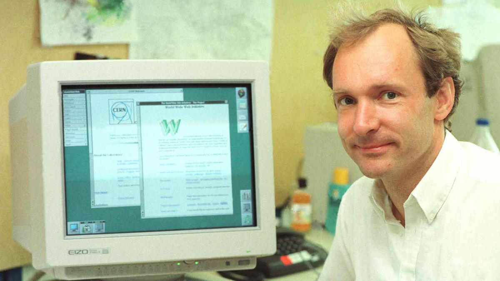
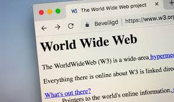
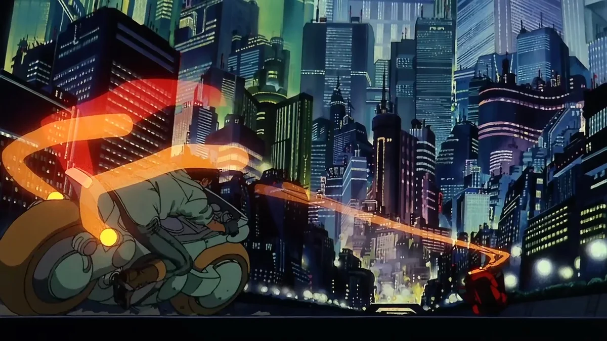

📋 Resumo
Se a década de 1980 havia sido marcada pela consolidação técnica das redes, pela padronização dos protocolos e pela expansão acadêmica, o biênio 1989–1991 inaugurou a fase em que a internet deixou de ser uma rede para especialistas e se tornou um espaço navegável, visual e acessível ao público. É nesse curto período que Tim Berners-Lee, trabalhando no CERN, cria a World Wide Web — não apenas uma ferramenta, mas uma nova linguagem para organizar o mundo digital. A Web não substituiu a internet, mas deu a ela forma, rosto e propósito. E esse processo, embora pareça inevitável hoje, foi profundamente revolucionário e experimental na época.
📚 Detalhes
Em 1989, o CERN enfrentava um problema típico de grandes centros científicos: pesquisadores do mundo inteiro produziam e armazenavam gigantescas quantidades de informação, mas não havia um sistema eficiente que permitisse compartilhá-las entre diferentes computadores, sistemas operacionais e laboratórios. Cada grupo tinha seus próprios formatos, bancos de dados, servidores e métodos de documentação. Isso se refletia em confusão, perda de dados e um esforço enorme para simplesmente acessar aquilo que já existia.
Foi nesse contexto que Tim Berners-Lee, então um engenheiro de software no laboratório, escreveu a proposta “Information Management: A Proposal”, um documento que, na época, parecia apenas mais um projeto burocrático, mas que hoje é reconhecido como a certidão de nascimento da Web. Berners-Lee propôs algo radical: um sistema global de documentos interligados por hipertexto, acessíveis por qualquer computador conectado a uma rede. O conceito de hipertexto — textos conectados por links — já existia desde os anos 1960, mas nunca havia sido aplicado de forma global e interoperável. Berners-Lee imaginou uma estrutura onde cada documento teria um endereço único (URL), seria transmitido por um protocolo específico (HTTP) e seria lido por um programa capaz de interpretar sua formatação (o navegador). Esse trio — URL, HTTP e HTML — se tornaria a base da web como a conhecemos até hoje.

No final de 1990, Berners-Lee, junto com seu colega Robert Cailliau, já tinha construído as primeiras versões funcionais dessas tecnologias. O primeiro servidor web rodou no computador NeXT do próprio Berners-Lee, e o primeiro navegador — chamado simplesmente de WorldWideWeb — tinha interface gráfica, suportava links clicáveis e permitia navegar entre páginas. O computador original em que o primeiro site foi hospedado, com uma etiqueta alertando “This machine is a server. DO NOT POWER IT DOWN”, se tornou um dos artefatos históricos mais fotografados da história da tecnologia.

O primeiro site do mundo, criado em 1991, explicava justamente o que era a Web, como ela funcionava e como outras pessoas poderiam criar seus próprios sites. Esse site continua preservado e acessível até hoje, mostrando a simplicidade e a genialidade de seu design. Essa simplicidade foi fundamental para o sucesso da Web: qualquer pessoa com conhecimento básico podia criar documentos HTML e publicá-los em servidores, permitindo que o conteúdo digital crescesse de forma descentralizada. Mas é impossível compreender esse período sem entender o estado político e cultural do mundo no final da década de 1980.

Em novembro de 1989, a queda do Muro de Berlim marcou simbolicamente o fim da Guerra Fria. A União Soviética enfrentava colapso político e econômico, e o mundo ocidental entrava numa fase de internacionalização e abertura de mercados. A Web nasceu exatamente nesse contexto de globalização emergente. O desejo de compartilhar informação sem fronteiras, de conectar pessoas de diferentes países e de criar uma cultura científica mais colaborativa estava alinhado com o espírito do tempo. Quando Berners-Lee pensou em uma rede descentralizada, aberta, baseada em padrões livres e não proprietários, ele refletia um clima histórico de mudança e democratização. No ambiente científico, o CERN era um local particularmente fértil para esse tipo de inovação. Como centro internacional de pesquisa, ele reunia cientistas de dezenas de países, com universidades parceiras espalhadas pelo mundo. A comunicação precisava ser rápida, padronizada e acessível.
A Web aparece como uma resposta natural a essa necessidade, e é por isso que seus princípios originais são tão diferentes das tecnologias fechadas desenvolvidas por empresas comerciais na época. Berners-Lee insistiu desde o início que a Web deveria ser aberta e gratuita, sem patentes ou licenças, pois temia que uma rede proprietária impedisse sua universalização. Sua visão ética — mais do que técnica — permitiu que a Web se tornasse o maior sistema de conhecimento coletivo já criado pela humanidade.
No final de 1991, quando a Web foi aberta ao público, suas ferramentas ainda eram rudimentares. Pouquíssimos sites existiam, os navegadores eram experimentais e a maioria das pessoas nem sequer sabia que a internet existia. Mas os fundamentos estavam lançados. O que faria a Web explodir nos anos seguintes seria justamente sua estrutura modular e universal: qualquer computador capaz de entender HTML e HTTP poderia entrar na rede, e qualquer pessoa poderia criar conteúdo. Essa descentralização contrasta fortemente com as redes corporativas da época, que eram limitadas, pagas e proprietárias.
Culturalmente, a Web encontrou um terreno fértil. No início dos anos 1990, a cultura cyberpunk dominava livros, filmes e revistas científicas. Obras como “Neuromancer” (1984), “Blade Runner” (1982) e “Akira” (1988) influenciavam a imaginação das pessoas sobre redes e mundos virtuais. Revistas como Wired começavam a surgir, e grupos acadêmicos falavam sobre a futura “sociedade da informação”. Esse ambiente fez com que o conceito de uma “teia mundial” de conhecimento fosse recebido não apenas como uma inovação técnica, mas como um marco cultural. Tecnicamente, a Web também consolidou uma das ideias mais importantes de toda a história da computação: a separação entre infraestrutura e conteúdo. A internet era o “solo”, a camada física e lógica. A Web seria a “floresta”, o espaço onde ideias, textos, imagens e posteriormente vídeos e serviços floresceriam. Pela primeira vez, computadores podiam acessar documentos em qualquer lugar do mundo sem que o usuário precisasse conhecer códigos complexos ou comandos técnicos. A Web transformou a internet de um sistema de comunicação em um ecossistema de conhecimento.

Assim, entre 1989 e 1991, nasce o alicerce do mundo digital moderno. A partir da Web, tudo mudaria: jornalismo, pesquisa científica, comércio, educação, cultura, entretenimento e até mesmo relações humanas. O que Berners-Lee criou não foi apenas uma ferramenta tecnológica, mas um paradigma de organização social. E tudo começou com uma proposta interna do CERN para organizar documentos científicos — uma ideia simples que se tornaria um dos pilares da civilização contemporânea.
O primeiro site publicado. WWW.
Site: https://info.cern.ch/hypertext/WWW/TheProject.html
.
Neuromancer
Compra: https://www.amazon.com.br/Neuromancer-William-Gibson/dp/8576573008
.
Blade Runner
Trailer: https://www.youtube.com/watch?v=eogpIG53Cis
.
AKIRA
Trailer: https://www.youtube.com/watch?v=vvnNpjH93NU
.
The Virtual Revolution (BBC, 2010) – sobre o impacto da Web
Documentário: https://www.youtube.com/playlist?list=PL289282B5A4F3F07A&utm_source=chatgpt.com
.🔗 Fontes de Pesquisa